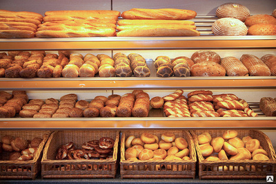
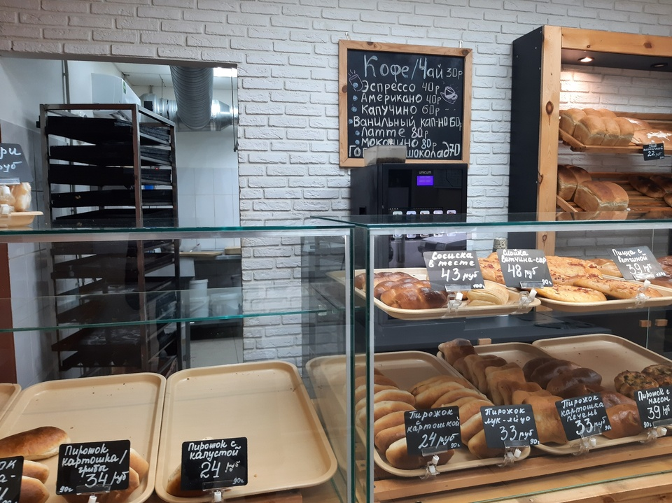
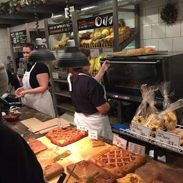
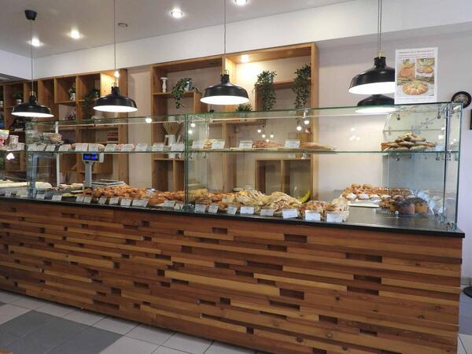
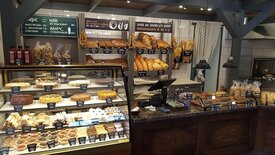
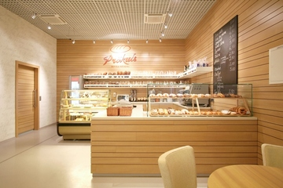
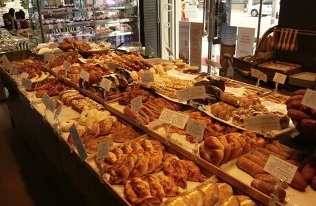
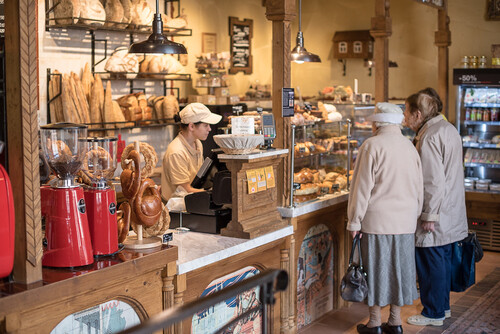

Булочная №1
Адрес: ул. Пушкина, д. Колотушкина
Описание: Наша первая булочная, открытая в 2000 году, известна своими традиционными рецептами и уютной атмосферой. Здесь вы можете найти широкий ассортимент хлебобулочных изделий, начиная от классического багета и заканчивая экзотическими видами хлеба.




Булочная №2
Адрес: пр. Ленина, д. 7
Описание: Эта булочная открылась в 2005 году и быстро стала популярной благодаря своим инновационным десертам. Здесь вы можете попробовать уникальные десерты, которые вы не найдете нигде больше.



